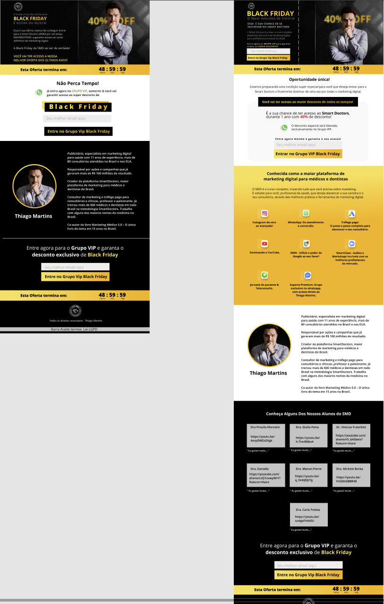
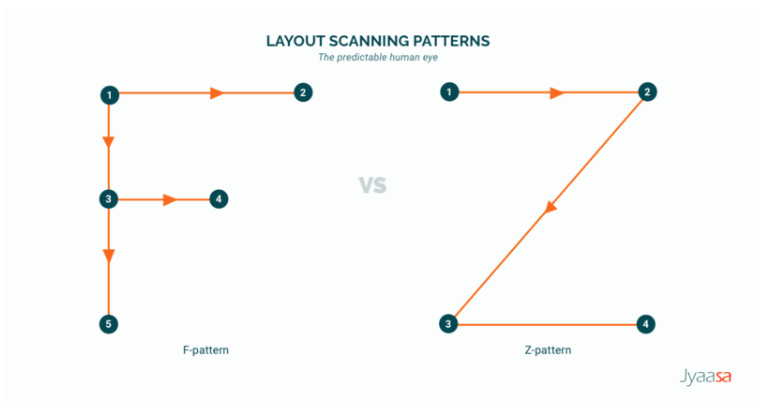
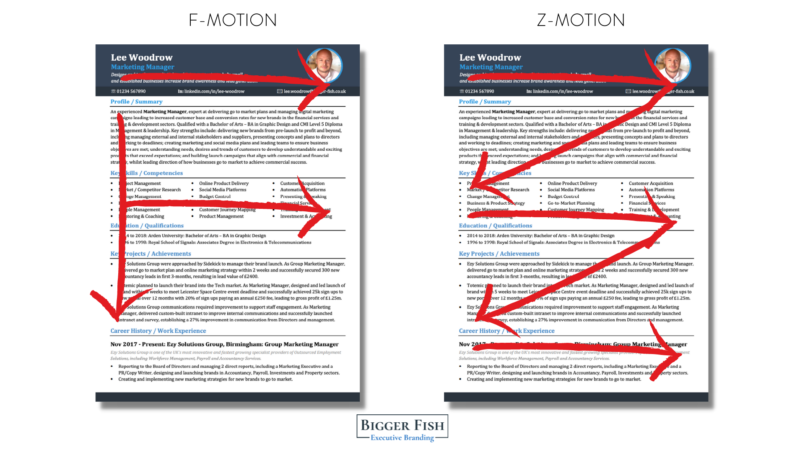
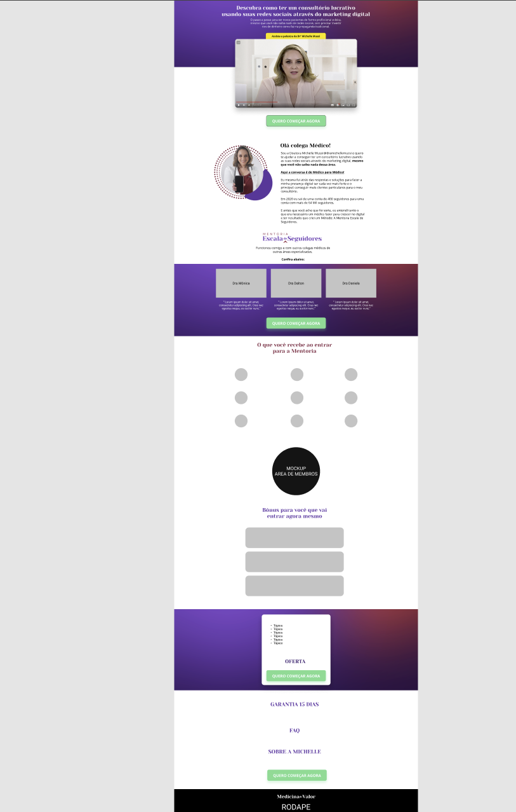
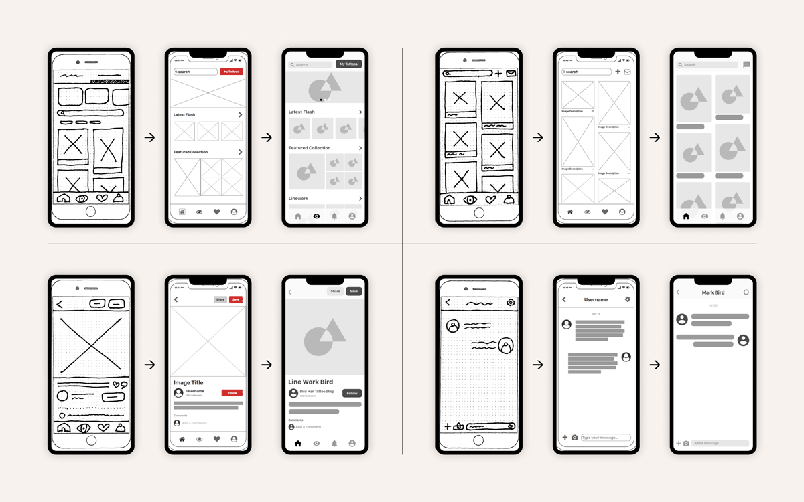
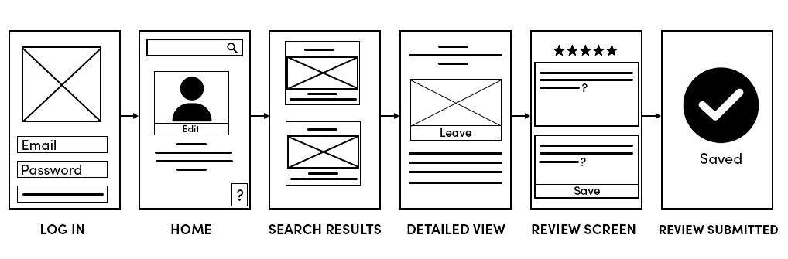
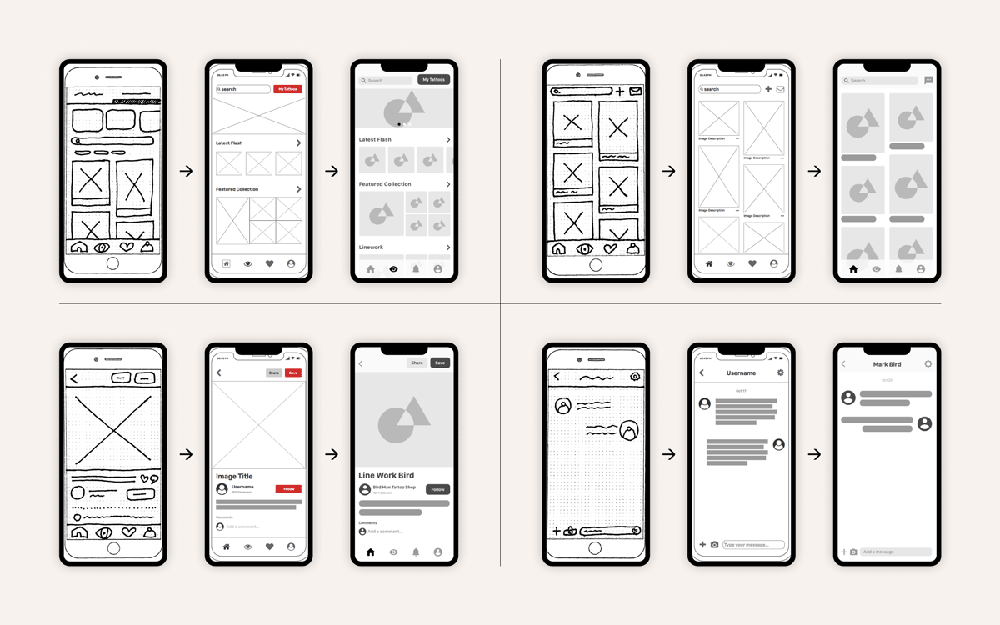
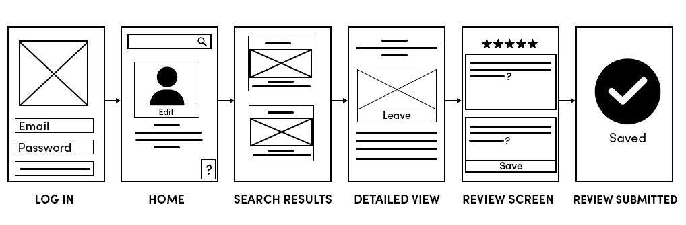
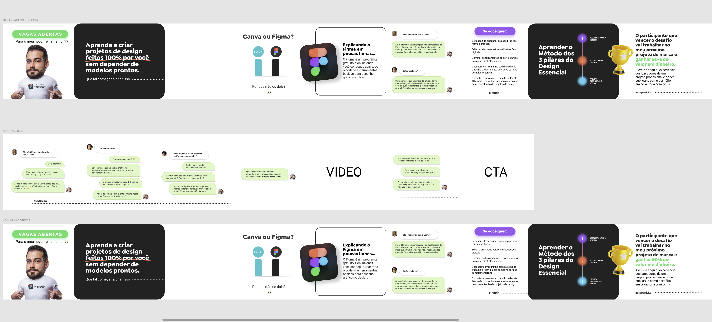

Disciplinas
INTERFACE HUMANO-COMPUTADOR-T01-2024-2 Concluído
Materiais
Vídeo 2 - LIVE 059 - COMO CRIAR PÁGINAS WEB USANDO FIGMA + ORBIT PAGES sendProf.ª ministrante: Diego Rangel
Conteúdo
Prototipação de interface Web
COMO CRIAR PÁGINAS WEB USANDO FIGMA + ORBIT PAGES.
A importância de ferramentas como o Figma para criar protótipos que permitem maior flexibilidade e economia de tempo durante o processo de desenvolvimento. A necessidade de otimizar páginas para dispositivos móveis e de usar técnicas de design focadas na experiência do usuário, como mapas de calor para analisar o comportamento dos visitantes.
O processo envolve a criação de layouts com grid e colunas, aplicando o método "Heroes Action" e a técnica de marketing AIDA para criar páginas de vendas eficazes. Exemplos práticos e como elementos visuais, como cores, fontes e contraste, ajudam a guiar o usuário para ações específicas, como clicar em um botão de call-to-action.
Estratégias de marketing para otimizar vendas e o uso de templates prontos para acelerar o processo de design. O uso de referências visuais e a adaptação de designs bem-sucedidos para personalizar landing pages com eficiência.
A importância de descrições claras de produtos e identidade visual para um design eficaz de páginas web. A demonstração inclui o uso do Figma e Orbit Pages, ensinando a adicionar blocos, personalizar fontes, botões, ícones e otimizar o design para legibilidade e experiência do usuário. Também são discutidas técnicas para dividir grandes blocos de texto, ajustar layouts e criar uma interface atraente. Um guia passo a passo para criar páginas web envolventes e incentiva a experimentação com diferentes elementos de design.
Por que usar o Figma?É para isso que ele foi feito - Prototipagem e Layout
Por que usar o Orbit Pages?É um construtor de fácil uso e praticidade
Te poupa muitos custos (tem conta gratuita)
É o que você precisa para começar
Prototipagem.
O ato de criar um protótipo de alguma coisa antes de realmente construir o projeto e torná-lo realidade
- Porque fazer isso?
- Imagine construir uma casa inteira antes do cliente visualizar e quando você entregar o projeto, o cliente reprovar 60% do que foi feito... é por isso que existe um protótipo/maquete/pré-visualizar de como vai ficar aquilo.
- Exemplos → visitar. 
-
dicasvisuais →
- Funções do Figma específicas
- Auto-layout
- Layout Grid
- Components
- Constraints
- Prototype
- Inspect
- Animate/Transitions
- Export Selection
Técnica usada para ver onde vão ficar posicionados os elementos
- Layout em F vs Leitura em Z  
- Exemplos
- Exemplo da MDV 
https://miro.medium.com/v2/resize:fit:1400/1*IWyQqmF2DNGh-CPadIp2fA.png https://media.licdn.com/dms/image/v2/C4D12AQH-dap8RlsPXw/article-inline_image-shrink_1500_2232/article-inline_image-shrink_1500_2232/0/1627040263043?e=1732752000&v=beta&t=PVivwutLHsM9hShrStj1EXsA6z9EEtQr6HL1LMX5nZo
 


 https://images.ctfassets.net/w6r2i5d8q73s/1PKFOovE49evp8hVr0zlPa/995f645926b96c0626f658292713579f/Low_Fidelity_Wireframe_Vorlage.png?fm=webp&q=75 https://linksoftware.net/wp-content/uploads/2022/05/inktank-iterativewireframes.png https://media.geeksforgeeks.org/wp-content/cdn-uploads/20210404203114/Low-fidelity-Wireframes.jpg
https://www.figma.com/design/UEVCdIY6Vja59JurwwuRso/MDV?node-id=0-1&node-type=canvas&t=6FhcXjTWDvvaoYIa-0
- UX = User Experience
- Técnica/Profissional que projeta como o usuário vai navegar, consumir e compreender aquela informação para a tomada de ação.
- User Interface = Interface de usuário = Front end
- É aquilo que o usuário vai ver de beleza (cores, fontes, fotografias, efeitos, hierarquias...)
Exemplos
https://www.figma.com/design/w2kMZROWQq2iygvJuqVUJk/Desafio-Dominando-o-Figma---DDF?node-id=67-1064&node-type=frame&t=nSkF8b1exDAZiDMX-0
Pesquisa de referências.
- Behance
- "Landing Page Examples"
- "Landing Page Templates"
Mão na massa
3 pontos antes de começar a mão na massa
- 1 - Os passos de Figma à seguir, servem para qualquer construtor de site*
- 2 - Como vamos usar o Orbit pages, vou criar um layout no Figma que se adeque ao que o construtor de site do orbit me permite construir.
- Vamos escolher o template agora.
- 3 - Você pode só trabalhar desenhando páginas e deixar um "programador" montar o seu layout para o cliente, mas...
- Eu sou do pensamento que você também tem que aprender a como montar o que você desenhou. Hoje em dia, mexer num construtor de sites não é um bixo de 7 cabeças e você pode ganhar mais 🤑
O passo a passo no Figma
- 1 - Criar um novo documento
- 2 - Definir o tamanho de desktop
- Largura = 1920 ou 1400*
- Altura = Ai depende do conteúdo que vai estar na página
- 3 - Criar as margens e guias
- Método Fácil
- Criando um retângulo com 1200px de largura e ao centro
- Método Grid Layout
- 4 - Hero section (o topo da página)
- Altura = 600px
- AIDA
- Atenção
- Fundo bem chamativo
- Fotografia / ilustração / ícone / logo
- Interesse
- Titulo
- Desejo
- Subtítulo
- Ação
- Botão de ação
- OBS: No topo da página às vezes pode ter uma pequena seção de contador regressivo ou aviso
- 5 - Layout do restante da página
- Levar em consideração o que dá e o que não dá para você criar e colocar no construtor de sites
- 6 - Revisão e Otimizações
- Texto e leitura
- Fotos e ícones
- Contrastes
- Posição das seções
- 7 - Enviar protótipo para aprovação
- 8 - Exportar após aprovação
- Exportar grupos
- Exportar elementos
- Exportar imagens
- Formatos para exportar: PNG, JPG, SVG*